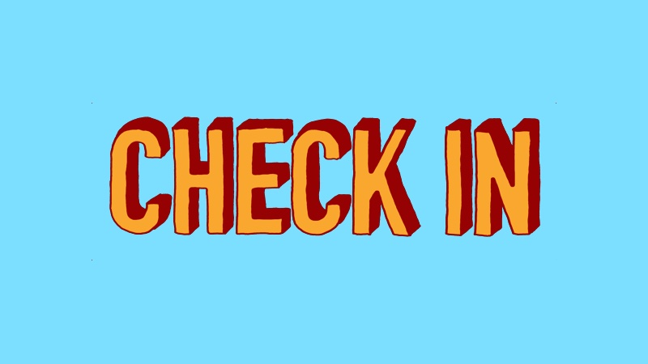
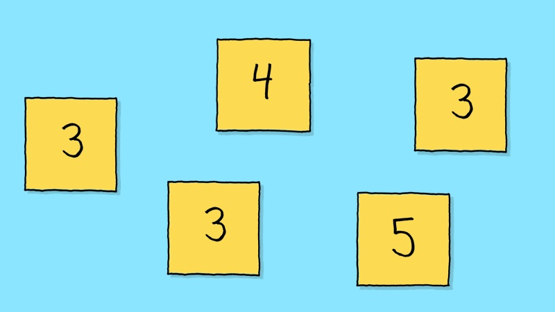
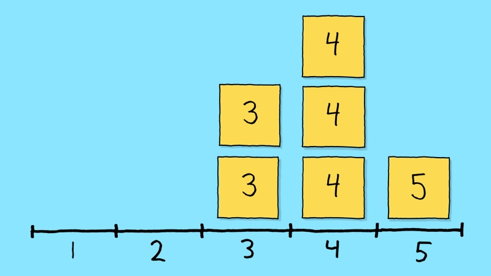
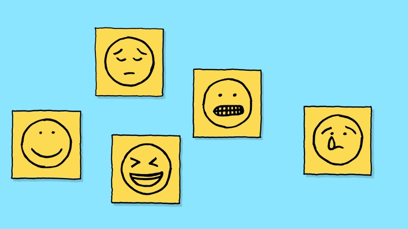
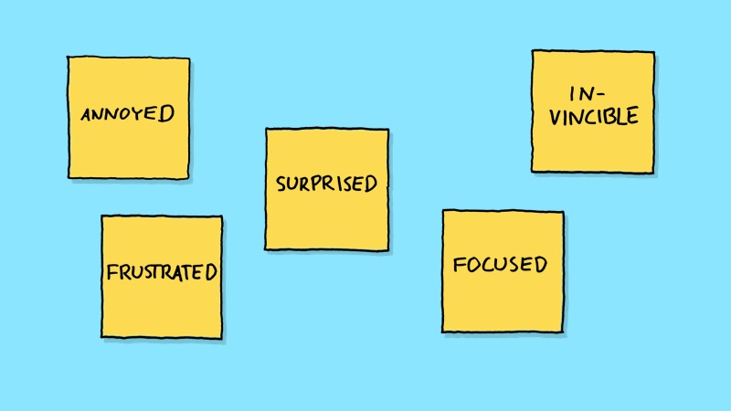
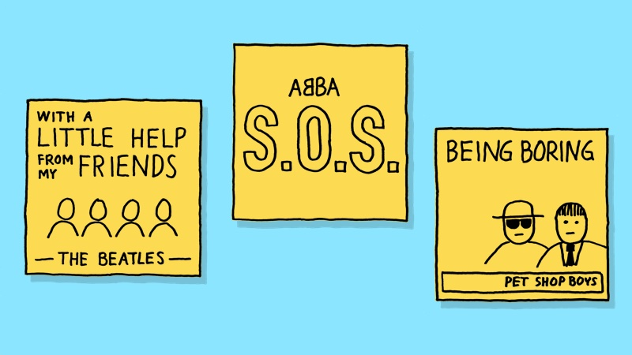
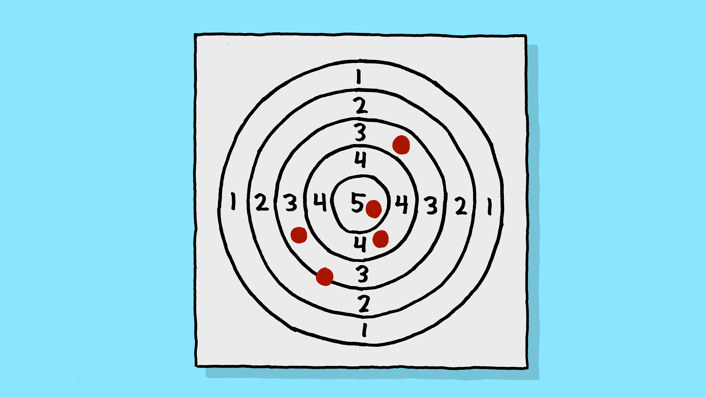
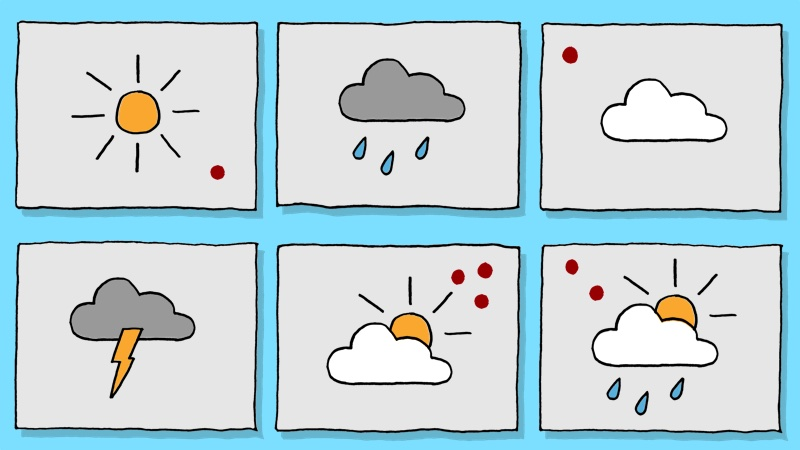
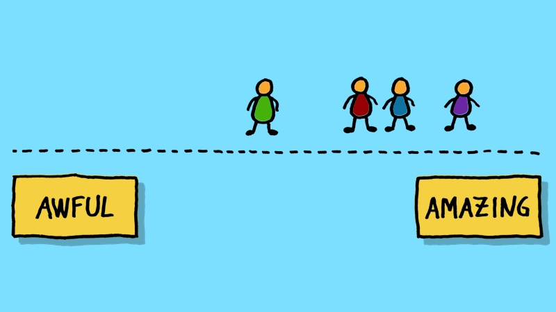
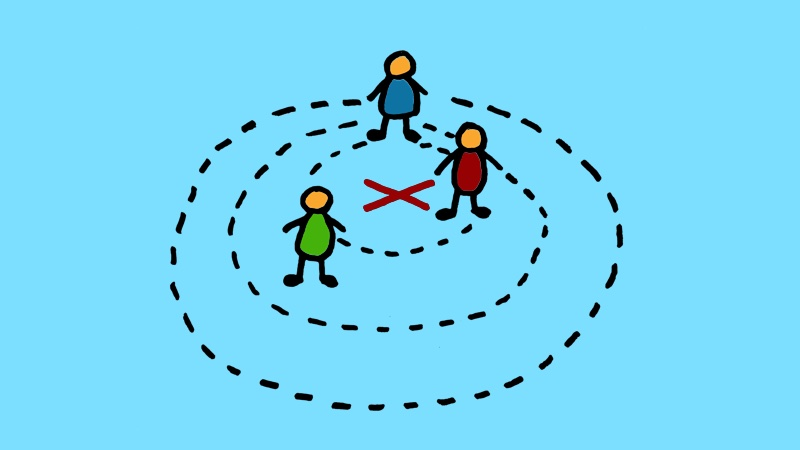

10 check-in exercises for agile retrospectives

A quick check-in exercise is a great way to start a retrospective. Not only does it help the group get warmed up and quickly get a feeling for how everyone feels the sprint went. It’s also a really useful tool for you as the facilitator, as a way to assess what’s going on. Is whatever plan you have for the rest of the retrospective the right one or do you need to do something different?
As a facilitator, it’s a good idea to have several different check-ins to choose from, so that you can keep your retrospectives varied and interesting. I will share my favourites in this article.
For simplicity, I will talk about rating the sprint, but these exercises could just as easily be used to rate something else. For example, how easy it is to release, how proud are people of the product, how good the quality of the code is, how useful the retrospectives are and so on.
How to facilitate
Most of the exercises below follow the same simple format: each participant decide individually how they rate the sprint and then, one by one, reveal their rating, explaining in just a sentence or two why they went for the rating they did.
The trick as a facilitator is to do your best to move things along. You want everyone to get their say but not dive into discussions just yet. That way, there will be plenty of time for whatever exercise you run after the check-in.
Rate the sprint on a scale from 1 - 5

This is probably the easiest check-in possible: rate the sprint from 1 (“awful”) to 5 (“amazing”) by writing a number on a sticky note. Nevertheless, this exercise tends to do the job and is sometimes all you need.
Make a histogram

A nice variation of the check-in above comes from the brilliant website Retromat, where you can find lots of good exercises.
Draw a scale from 1 - 5 on a whiteboard or Flipchart and let the participants create a histogram (bar chart) with their stickies. This way, the result becomes a lot more visual, especially if your group is 6 people or more.
Draw a smiley / emoji

Another simple check-in is to ask the participants to draw a smiley (happy face, sad face etc) to describe the sprint. Or extend the options to any emoji.
One word

This exercise may require a little bit more thought from the participants than the previous ones: describe how you felt during the sprint (or describe how the sprint went) in one word.
The sprint soundtrack

I’m sure lots of people have invented this exercise before and after me but I came up with this check-in exercise when I was working with the BBC Radio team: if this sprint was a song, what would it be? If people feel creative, let them draw the album cover as well, but we warned: you will need bigger-than-standard stickies and a little bit of extra time for this.
Some could find this exercise a bit tricky, so you may want to prepare a list of examples, like Under Pressure by Queen, Walking on Sunshine by Katrina and the Waves and so on.
Target practice

How close to a bullseye was the sprint? Draw or print a shooting target and let the participants rate the sprint with a sticky dot or by drawing an ‘x’.
There’s no particular definition for what going left or right or high or low of the bullseye means. Instead, the participants tend to make up their own meaning: “I think we aimed a bit high”, or “I’ll put mine over here, because I felt I was on my own”, and so on.
Coming to think of it, I quite like target practice as a metaphor for the sprint: we take aim, shoot, see how we did, adjust and shoot again.
The sprint weather report

I tend to end up using this one when the weather outside is particularly nice or horrible: choose a weather symbol to describe the sprint.
It’s a good idea to prepare by drawing or printing weather symbols on sheets of paper beforehand and stick them on the wall. Then let people vote with a sticky dot or make an 'x' with a marker.
You can have a slightly more varied selection of symbols than I have in the picture above, like snow, wind and so on. And don’t feel you have to define beforehand what every icon means — just let people make up their own meanings and decide what weather is good or bad.
As an alternative to preparing the symbols beforehand, you can also let the participants simply draw their own symbols on stickies.
Update: If you want to try an alternative way to do this exercise, I have created some printable weather symbol cards you can download.
Pick a picture
Print a big stack of photos off the internet and spread them on the table. Let each participant choose one that describes how they felt during the sprint.
My favourite prop for this exercise, though, is something I learned from coach Sylvain Mahe at a Scrum Gathering: use the cards from the board game Dixit. The weird and beautiful pictures on these cards are perfect for our purpose!
Make a stand

This is another one from Retromat. Instead of using stickies, dots or markers, why not let people use their bodies instead?
Create an imaginative scale on the floor by putting a piece of paper with the word “Amazing” at one end of the room and one with “Awful” at the other. Then let people place themselves on the scale, as usual explaining briefly why they picked the rating they did. Ask them to remain standing until everyone has placed themselves on the scale.
To my surprise, I’ve found this exercise even works well in retrospectives where people are feeling a bit down. I’m not sure if it’s because standing squashed together down at the “Awful” end creates a feeling of being in it together or just an opportunity to laugh a bit.
Constellations

I learned this exercise from one of my role models, Lyssa Adkins. It’s kind of a cleverer version of the previous exercise.
Move tables and chairs out of the way and mark a big ‘X’ in the middle of the floor. Then read out a statement, e.g. “I learned a lot this sprint”. If people agree with the statement, ask them to move towards the centre. If they disagree, move further away. Then keep repeating with a few different statements.
This can be a good way to start a retrospective where you’re going to explore a particular area. Prepare a list of statements related to that area and people will be able to go into the next part of the retrospective with a clear view of where the others stand (quite literally!).
Final words
Finally, let’s just point out that a check-in doesn’t always have to be about rating something. There are lots of other questions you can ask, for example:
- What are you hoping to get out of this retrospective?
- What is your number one problem right now?
- What was your favourite thing that happened in this sprint?
… and so on.
And remember a lot more meetings than retrospectives can benefit from a check-in.
Good luck!